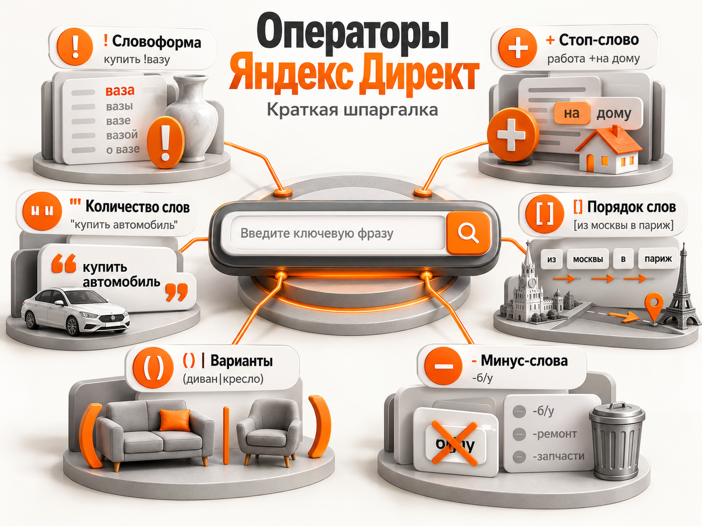

Блог о платном трафике
Операторы Яндекс Директ: как работают !, кавычки, квадратные скобки и другие символы
Операторы Яндекс Директ - это специальные символы в ключевых фразах, которые помогают уточнить условия показа рекламы. Восклицательный знак ! фиксирует словоформу, кавычки " " ограничивают количество слов, квадратные скобки [ ] сохраняют их порядок, плюс + делает стоп-слово обязательным, а минус - исключает ненужные запросы. Круглые скобки ( ) и вертикальная черта | объединяют варианты.
Операторы нужны не для каждого ключа. Они полезны, когда обычное соответствие захватывает запросы с другим смыслом, но чрезмерные ограничения могут отрезать целевых пользователей. Кроме того, операторы действуют на ключевые фразы, а не на весь трафик автотаргетинга.
Таблица операторов Яндекс Директ с примерами
| Оператор | Что фиксирует или исключает | Пример ключевой фразы | Подходящий запрос | Неподходящий запрос |
|---|---|---|---|---|
| ! | Конкретную форму слова | купить !вазу | купить вазу | купить вазы |
| + | Обязательное стоп-слово | работа +на дому | работа на дому | работа по дому |
| " " | Количество слов, без дополнительных слов | "купить автомобиль" | автомобиль купить | купить красный автомобиль |
| [ ] | Порядок слов и значимых предлогов | билеты [из москвы в париж] | билеты на самолет из москвы в париж | билеты из парижа в москву |
| ( ) и | | Варианты внутри группы | купить (пуховик|куртку) | купить куртку | Не исключают запросы самостоятельно |
| - | Слово из условий показа | купить платье -б/у | купить новое платье | купить платье б/у |
Примеры показывают работу конкретного условия соответствия на Поиске. Реальные показы зависят и от других настроек кампании: минус-фраз, автотаргетинга и доступных типов соответствия. При работе с семантикой полезно понимать, как работает Яндекс Директ в целом.

Восклицательный знак !: фиксация словоформы
Оператор ! ставят непосредственно перед словом, форму которого нужно сохранить. Он фиксирует число, падеж или время. Например, купить !вазу соответствует запросу купить вазу, но не запросу купить вазы.
Другой пример: купить билет в !москву. Вариант купить билет в москву подходит, а купить билет в москве не соответствует зафиксированной словоформе. Разница принципиальна: в первом случае речь о направлении, во втором может подразумеваться место покупки.
Оператор полезен, когда форма слова меняет смысл. При этом ! не превращает всю фразу в точное соответствие и сам по себе не запрещает дополнительные слова. Поэтому в реальной кампании проверяйте запросы, а не ставьте ! перед каждым словом автоматически.
Кавычки: фиксированное количество слов
Кавычки " " ограничивают ключевую фразу запросами без дополнительных слов. Для ключа "купить автомобиль" подходят запросы купить автомобиль и автомобиль купить. Запрос купить красный автомобиль не подходит: появилось дополнительное слово.
Кавычки не фиксируют порядок слов. Они особенно сильно сужают охват, если пользователи обычно уточняют модель, город, характеристику или условия покупки. Поэтому использовать кавычки стоит там, где такие уточнения действительно не нужны или требуется отдельно протестировать узкую группу запросов.
Квадратные скобки: фиксированный порядок слов
Квадратные скобки [ ] фиксируют порядок слов в указанной части ключа. Это полезно, когда перестановка слов или предлогов меняет смысл. Для фразы билеты [из москвы в париж] подходят запросы билеты из москвы в париж и билеты на самолет из москвы в париж. Запрос билеты из парижа в москву уже описывает обратный маршрут.
Дополнительные слова могут находиться вне зафиксированной последовательности. Однако внутри неё произвольные вставки недопустимы: билеты из москвы недорого в париж не соответствует приведённому примеру со скобками. При этом словоформы могут меняться, если отдельно не задан оператор !.
Кавычки или квадратные скобки: в чём разница
Кавычки контролируют количество слов, а квадратные скобки - порядок. Ключ "купить автомобиль" не допускает дополнительные слова, но допускает перестановку. Ключ [из москвы в париж] допускает уточнения за пределами последовательности, но сохраняет направление.
Это разные инструменты. Для товарного запроса, который должен оставаться коротким, могут подойти кавычки. Для маршрутов, доставки между городами и конструкций, где важен порядок, чаще подходят скобки. Решение зависит от того, какие реальные запросы нужно включить или исключить.
Плюс +: обязательные предлоги и стоп-слова
Оператор + указывает, что определённое стоп-слово должно присутствовать в запросе. В ключе работа +на дому предлог на обязателен: работа на дому подходит, а работа по дому означает другое.
Другой пример - крем +для бритья. Крем для бритья и крем после бритья - разные продукты. При этом Директ уже учитывает влияние стоп-слов на смысл фразы, поэтому добавлять + ко всем предлогам подряд не требуется. Используйте его, когда нужно явно закрепить важное смысловое различие.
Минус-слова и минус-фразы: как исключать ненужные запросы
Минус-слово исключает запросы с определённым словом. Его можно записать после ключевой фразы через дефис, например купить платье -б/у. Такая конструкция подходит магазину новых платьев, если запросы о подержанных вещах не нужны.
Минус-фраза исключает сочетание слов целиком. Например, для группы объявлений о платьях фраза своими руками позволит отсечь запросы о самостоятельном пошиве, в которых встречается это сочетание. Если присутствует только одно слово из минус-фразы, этого недостаточно для исключения по такой фразе.
В актуальном Директе минус-слово задаётся для конкретной ключевой фразы, а минус-фразы можно назначать группе объявлений или кампании. Эти ограничения дополняют друг друга. Минус-фразы также поддерживают операторы !, +, кавычки и квадратные скобки, если требуется более точное исключение.
Большие списки исключений, собранные без проверки, способны убрать полезный спрос. Например, слово отзывы не обязательно означает нецелевого пользователя: человек может изучать товар перед покупкой. После запуска рекламы изучайте отчёт «Поисковые запросы» и добавляйте ограничения на основании фактических формулировок. Подробности вынесены в отдельный материал о минус-фразах в Яндекс Директе.
Круглые скобки ( ) и вертикальная черта |: перечисление вариантов
Круглые скобки и вертикальная черта позволяют сгруппировать варианты в сложной ключевой фразе. Например, купить (пуховик|куртку) задаёт два варианта: купить пуховик и купить куртку. Аналогично заказать еду (роллы|пицца) объединяет два направления поиска.
Это инструмент группировки, а не запрет дополнительных слов. Не следует путать вертикальную черту | с минус-словами: она не исключает лишние запросы.
Можно ли комбинировать операторы
Да, операторы Яндекс Директ можно использовать совместно. Например, [дома на !воде] одновременно фиксирует порядок слов и форму слова воде. Такая запись помогает отличать запросы о плавучих домах от формулировок с другим смыслом.
Но сложность ключа должна решать реальную задачу. Избыточная конструкция с кавычками, !, + и скобками одновременно может настолько сузить охват, что кампании будет трудно собрать достаточное число целевых переходов. Оценивать нужно не количество операторов, а качество запросов и последующих конверсий.
Где поставить операторы в Яндекс Директе
Операторы вводятся прямо в текст ключевой фразы. Для существующей группы объявлений откройте её редактирование и найдите поле «Ключевые фразы» в блоке тематических слов. Также в Директе можно добавить ключевые фразы через боковое меню «Добавить», выбрав кампанию, группу и ручной ввод.
Чтобы применить оператор, достаточно заменить обычную запись нужной конструкцией: например, вместо купить вазу указать купить !вазу. После сохранения посмотрите, не сократился ли полезный охват и какие запросы действительно приводят посетителей. Общий процесс описан в материале как настроить Яндекс Директ.
Влияют ли операторы на автотаргетинг
Нет, операторы ключевой фразы не ограничивают автотаргетинг. Автотаргетинг подбирает показы без опоры на заданную ключевую фразу: алгоритм анализирует объявление, посадочную страницу и другие сигналы соответствия.
Например, если в ключевой фразе стоит купить !вазу, это не означает, что все показы группы будут идти только по такой словоформе. Автотаргетинг может охватывать дополнительные близкие по смыслу запросы. При этом минус-фразы, назначенные кампании или группе, могут учитываться и при работе автотаргетинга.
Поэтому при разборе нецелевого трафика смотрите не только текст запроса, но и условие показа в отчёте «Поисковые запросы»: ключевая фраза или автотаргетинг. Для работы со вторым механизмом пригодится отдельная статья об управлении автотаргетингом.
Работают ли операторы в Яндекс Вордстате
Да, операторы !, +, кавычки, квадратные и круглые скобки, | и минус используются и при анализе запросов в Вордстате. Они помогают отделить общий спрос от более узких формулировок.
Но поддержка операторов зависит от вкладки и режима просмотра динамики. Поэтому значения запроса без операторов и с ними нельзя механически сравнивать как одинаковые показатели. Особенно внимательно проверяйте выбранный режим, когда оцениваете частотность по периодам.
Частые ошибки при использовании операторов
Кавычки на всех ключах. Запросы с полезными уточнениями исчезают из соответствия. Прежде чем ограничивать фразу, оцените, приносят ли дополнительные слова качественный трафик.
Путаница между ! и кавычками. Восклицательный знак фиксирует форму одного слова, но не всю фразу. Кавычки ограничивают количество слов, но не закрепляют конкретные падежи.
Скобки вместо кавычек. [ ] не запрещают дополнительные слова вне фиксируемой последовательности. Если требуется ограничить количество слов, одних скобок недостаточно.
Лишние минус-слова. Исключение слов цена, отзывы, сравнение без проверки способно убрать потенциальных покупателей. Ориентируйтесь на реальные запросы и обращения.
Игнорирование автотаргетинга. Ограниченный кавычками ключ не гарантирует, что автотаргетинг не покажет объявление по другим формулировкам. Анализируйте механизмы показа отдельно.
Как выбрать нужный оператор: короткий алгоритм
- Если разные словоформы означают разные вещи, используйте !.
- Если важно конкретное служебное слово, при необходимости используйте +.
- Если запрос должен обходиться без дополнительных слов, используйте кавычки.
- Если меняется смысл при перестановке слов, используйте [ ].
- Если нужно исключить лишнюю тематику, применяйте минус-слова или минус-фразы на нужном уровне.
- Если нужно объединить несколько вариантов, используйте ( ) и |.
После любого изменения проверьте поисковые запросы и конверсии. Если обычное соответствие уже приводит подходящих пользователей, добавление оператора само по себе не сделает рекламу эффективнее.
Коротко
Операторы Яндекс Директ помогают управлять соответствием ключевой фразы: ! отвечает за словоформу, + за обязательное стоп-слово, кавычки за количество слов, [ ] за порядок, ( ) и | за варианты, а минус-слова за исключения.
Самая полезная практика - вводить операторы точечно, когда они устраняют конкретную проблему с поисковыми запросами. При оценке результатов обязательно учитывайте автотаргетинг, минус-фразы и фактические конверсии.